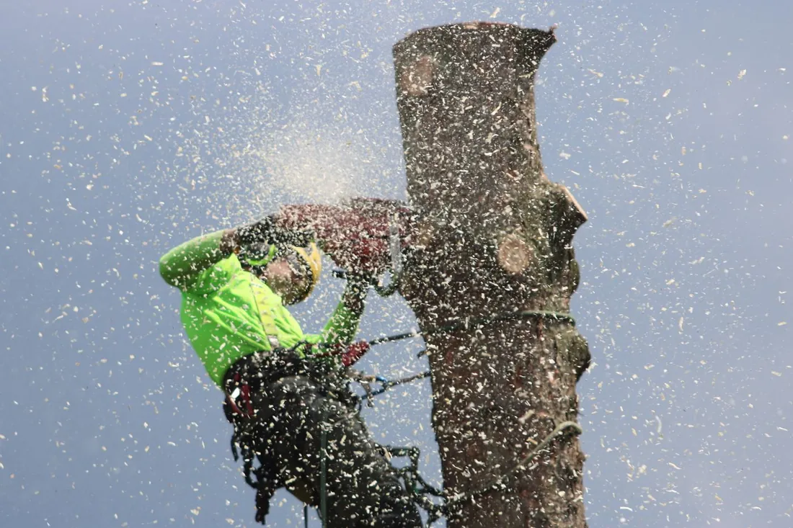

Dead, leaning or storm-damaged trees taken down safely on sand that will not hold heavy equipment — sectional rigging, tight East End alleys and full debris haul-off.

Tree removal in Galveston, TX means taking a tree down in a place where the ground gives, the lots are narrow and the power drops run straight through the canopy. We remove dead and dying trees, storm-damaged trunks, salt-killed oaks and anything leaning toward a structure, across the island from the East End Historical District out to Pirates Beach and Sea Isle, plus the mainland side in Bayou Vista, Hitchcock and Texas City. You get a written price, a crew that rigs rather than drops when there is something underneath, and a yard raked clean before we leave.
Almost no removal on this island is a simple felling job. There is usually a house, a fence, a neighbor’s garage or an overhead service drop inside the fall radius, so the tree comes down in pieces instead of in one direction.
A climber ties in and works from the top, taking limbs off in sections small enough to control. Anything heavy gets roped to a friction device and lowered rather than dropped. Once the canopy is off, the trunk comes down in rounds, each cut sized so the piece lands where we want it. On the widest lots with a clear drop zone we can fell in one go, and that is faster and cheaper — but we will tell you which one you have before quoting, not after.
The last stage is cleanup. Brush goes through the chipper, trunk wood is loaded, and the ground under the tree gets raked. Stump grinding is a separate line item because a lot of people want the stump left flush and are fine with it.
Three island-specific reasons, and they compound.
The ground. The USDA maps Galveston Island soil as fine sand with between zero and five percent clay, formed from wind-blown deposits, with a seasonal water table that can sit eleven inches down. Roots go wide and shallow because there is no reason to go deep and salt water if they do. The result is a broad, thin root plate instead of an anchor.
The salt. Hurricane Ike put salt water across most of the island for close to twenty-four hours in September 2008. Texas Forest Service counted 10,840 dead and dying trees on city right-of-way alone, with roughly 30,000 more on private land — about 39 percent of the island’s trees and 47 percent of its canopy. Trees that survived took root damage that still shows up as slow decline more than fifteen years later.
The wind. A prevailing southeast wind off the Gulf works on the same side of every canopy on the island, year after year, and a dense unthinned crown catches it like a sail.
Live oaks in areas that drained faster came through Ike when almost nothing else did. If you have a mature live oak that made it through 2008, it has already proven it can handle this ground. Before we quote removal on one, we check whether the real problem is the tree or a bad topping cut somebody made a decade ago.
| Tree size | Typical range | Notes |
|---|---|---|
| Under 25 ft | $150 – $500 | Often a same-day job |
| 25 – 50 ft | $440 – $1,300 | Most island removals land here |
| 50 – 75 ft | $900 – $2,500 | Sectional rigging, half to full day |
| 75 ft and up | $1,500 – $5,000+ | Usually a crane day |
| Stump grinding, add-on | $150 – $400 | Priced separately |
| Emergency or after-hours | +50% to +100% | Storm and hazard work |
Height and trunk diameter set the baseline. After that, four island factors decide where you land:
Preservation makes sense when the trunk is sound, the root flare is stable, and the problem is a few dead limbs or a canopy that was never thinned. Deadwood removal and a proper reduction cut cost a fraction of a removal and buy years. A mature live oak on this island is close to irreplaceable — the Galveston Island Tree Conservancy has replanted nearly 11,000 trees since Ike, and the ones going in now will not look like the ones we lost for decades.
Removal is the answer when the root plate is moving, the trunk has significant internal decay, more than half the canopy is dead, or the tree is close enough to a structure that failure is a roof rather than a mess. A dead tree also gets more dangerous to remove every month it stands, because the wood a climber has to trust keeps getting softer. Waiting rarely saves money.
If you are unsure which side you are on, that is exactly what the free estimate is for. We would rather trim a tree you can keep. If it does have to come out, ask about stump grinding in Galveston at the same visit — combining the two on one trip is cheaper than booking it later.
A medium tree of 25 to 50 feet generally runs $440 to $1,300 in the Galveston and greater Houston market. Large trees between 50 and 75 feet run $900 to $2,500, and anything over 75 feet is usually a crane day at $1,500 and up. Small trees under 25 feet start around $150. Access is what moves an island quote inside those ranges.
On Galveston sand the risk is rutting rather than cracking, and it is worst when the seasonal water table is high after a wet week. We bring ground mats for heavy equipment, and on soft or narrow lots we rig the tree down in pieces by hand instead of driving a truck across the yard. Tell us about a sprinkler system or a septic field before we arrive.
Trees on private property in Galveston are generally the owner's decision. A tree standing in the public right-of-way between the sidewalk and the curb requires City of Galveston approval first, and that includes many of the street oaks along Broadway and the East End. We identify which category your tree falls into during the free estimate.
Everything leaves with us unless you ask otherwise. Brush gets chipped on site, trunk wood is cut to manageable rounds and hauled, and the drop zone gets raked before we go. Plenty of Galveston customers keep the rounds for firewood or ask us to leave the chips as mulch, which costs nothing and saves a trip.
Look at three things: the root flare, the bark and the top of the canopy. Soil lifting behind a lean means the root plate is moving. Bark sloughing off in sheets means the cambium is dead underneath. Dieback starting at the very top of the crown, especially on an oak, is the classic signature of salt damage working backward from the tips. Any one of those is worth an inspection.
Send a photo or let us come look. We will tell you honestly whether the tree needs to come out or whether pruning buys you another ten years.
Call (409) 255-0582 for a Free Estimate